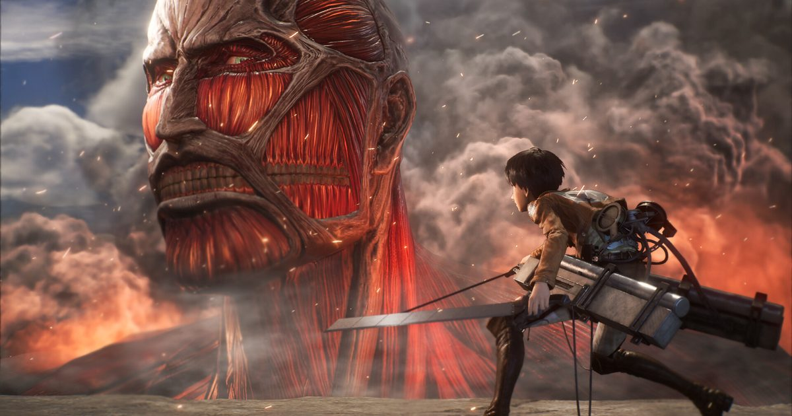

2026-10-30 · 定档深读
10 月 30 日，Famitsu 刊出《进击的巨人 3》制作人铃木英生的访谈，同日光荣特库摩美国分公司开放 Switch 2 数字预购并放出新预告。 游戏 12 月 10 日发售，PS5 / Switch 2 / Xbox Series X|S / Steam 四平台，Omega Force 开发。 访谈里最关键的一句话被很多媒体摘了出来：本作会完整讲完动画从头到尾的故事，没有「what if」，没有分支路线，也不会再做一个属于游戏自己的结局。 铃木的原话是：「既然我们这次覆盖了整个故事，那它本来就有一个结局。在游戏里再做一个我们自己的结局，说不通。」 一句话听起来像是保守，其实是一次相当锋利的表态。

铃木英生是系列初代的策划，从《进击的巨人 2：Final Battle》起担任制作人。 他透露团队最初考虑的其实只是「补完 Final Battle 之后动画剩下的部分」，后来担心那样做撑不起一个完整产品，才决定从第一集重建，而正式开发是在动画全部结束之后才开始的。 前作覆盖过的章节会重做，加入九大巨人战和新的剧情内容。
玩家角色不是艾伦，而是一个比艾伦那一期资格更老的前辈，全程以自定义调查兵团成员的身份经历历史。 铃木说，所有角色互动事件都是为这一作重新制作的； 也正因为玩家全程是原创主角，游戏里没有可以操控巨人战斗的段落。 最终季的关键场面会登场——艾伦与阿尔敏在「路」里的对话、三笠的小屋场面——但会按游戏的节奏重新调整，不是一比一复刻。
战斗的改动更大：巨人的攻击变得更凶，玩家需要闪避； 新增自由光标，可以锁定任意身体部位，在巨人放出强力攻击之前打断它； 锚定之后自动挥砍，不再需要掐时机按键； 新加入一键特殊技「Combat Arts」和「Boost Move」——空中移动时按住键会变成滑行，滑行中冲撞巨人可以打它的脚； 本作新登场的角色还有「Buddy Arts」组队技； 墙外调查首次以开放场形式出现。 TGS 2026 的试玩以兽之巨人战收尾，铃木说现场观察玩家操作成了后续平衡调整的重要依据。
要理解这句话的分量，得先记起《进击的巨人 2》当时的处境。 那款游戏发售时动画还没完结，它必须给自己的版本一个收尾，于是做了一个原创结局。 这在当年是无奈之举，但它把改编游戏放到了一个极其尴尬的位置上：你的结局有保质期。 半年后原作画到那里，你那个结局立刻变成一条被官方否掉的平行世界线，玩家再回头看它，情感价值直接归零。
所以《进击的巨人 3》拿到的第一重解放，不是技术上的，是时间上的：原作先替我把门关上了。 动画在 2023 年播完，漫画更早，这个故事已经有了唯一被承认的终点。 改编者此刻的第一义务，从「替原作补完」变成了「不给原作添乱」。 铃木那句「说不通」，说的其实是这个。
而我们想补一句：这恰恰是很多 Jump 系完结 IP 的游戏至今没学会的事。 动画完结之后，IP 游戏的商业逻辑还在，内容逻辑却断了——你不能再靠「下周会发生什么」吊人，只能靠「我们把那段再来一遍」。 在这个前提下，最诚实的产品决策就是承认自己是一部纪念碑，而不是一场挑战。 《进击的巨人 3》是少数愿意把这件事说出口的。
但完整复述有一个绕不过去的代价，那就是玩家角色的位置。 既然历史不能被改变，玩家就不可能是改变历史的那个人。 官方的解法是让原创主角当「前辈」——辈分比艾伦高，资历比艾伦老，可你依然只能站在他旁边看他做决定。 你陪着他走进玛利亚之墙的夺还战，也陪着他走到最后，你全程在场，全程无能为力。
这是一个很难拿捏的分寸：越靠近主角团，你的存在感越强，但你「不重要」这件事也越刺眼。 铃木给出的补丁其实相当聪明——游戏会给原创主角一个属于自己的收束，但不是另一个世界线结局。 换句话说：世界的结局是原作的，你的结局是你的。 在不改动任何既定历史的前提下，让玩家角色拥有一个终点，这是一刀很干净的切割。 它好不好用，得等 12 月 10 日打完才知道。
还有一个细节值得注意：所有角色互动事件都是新做的。 这句话在预算表上是很重的一笔，但在产品逻辑上是必需的—— 如果互动事件沿用前作，那玩家扮演的「前辈」就还是一个旁观者；只有把互动重新写一遍，这个原创主角才第一次拥有原作里不存在的、只属于他和艾伦他们之间的关系。 关系，是完结 IP 的游戏唯一还能合法生产的新内容。
战斗的改动看起来是两条相反方向的调整，其实是一件事。 一边是降低门槛：锚定之后自动挥砍，去掉了掐时机的按键；Focus Mode 按住即可减速；还有自动锁定选项。 另一边是提高压力：巨人变得更凶，会主动冲刺、挥臂拦截，你必须闪避。
这两件事不矛盾，因为它们动的是不同的东西。 门槛从「手速」降到了「路线」，压力从「我按不准」变成了「我站错地方」。 我们觉得这才是立体机动装置正确的翻译方式—— 在原作里，调查兵团的死因从来不是谁刀挥得慢了半拍，而是谁判断错了巨人的下一个动作、谁在错误的高度上错过了下一次锚点。 立体机动的本质是三维空间里的路线规划，不是 QTE。
自由光标锁部位打断，是同一条思路的延伸。 原作里「砍后颈」几乎是唯一解，是设定也是教条； 游戏把身体拆成可选目标，让「先打断手臂让它放不出那一击」成为可选择的战术。 这不是加数值，是把一个唯一解变成一个决策树。 加上 Boost Move 的滑行撞脚、Buddy Arts 的组队技，整套战斗的重心确实在往「判断」挪。
访谈里还有一段，我们认为比战斗改动更值得记下来。 铃木说：主要想看故事的玩家，应该能够不被战斗卡住地打完。 配套的东西是：可选的 Focus Mode、可选的自动锁定、降低难度没有任何惩罚、也不会削减奖励； 最高难度则在本篇通关后解锁，通关给奖励道具。
请注意这是谁说的——Omega Force，是做无双的那家公司，是「一骑当千」这四个字的发明者之一。 一家以割草闻名的开发商，在自己最有把握的动作系统上一再强调「你可以不打」，这不是心虚，是判断。 他们很清楚 12 月 10 日掏钱的大多数人是谁：动画 2023 年播完之后回来告别的人。 这批人要的不是被难度拦住，是把那几十个小时再走一遍。 换句话说，《进击的巨人 3》的第一功能是「重温」，第二功能才是「打」。 一款完结 IP 的游戏能把这个排序公开说出来，比它多设计两套连段更让人舒服。
还有一处细节很有意思：本作的 OP 动画由 MAPPA 制作、动作作画今井有文执导，但它不进首发，要等后续更新追加。 由动画制作公司亲手做的 OP，本身是一枚正统性印章——它在告诉玩家「这不是外包二创，这是自家人画的」； 而把它放在发售后，又说明它从一开始就被当成宣传物料，而不是内容本体。 连 OP 都在替这款游戏定位：首发那天来的人不需要被说服。
我们的观察：系列四作的历史，其实就是一部「IP 游戏如何追赶未完结原作」的历史。
| 作品 | 年份 | 覆盖剧情范围 | 结局来源 | 玩家角色 |
|---|---|---|---|---|
| 进击的巨人（初代） | 2016 | 动画第一季前后 | 原作进行中，自然收束 | 原创角色 |
| 进击的巨人 2 | 2018 | 至第三季左右 | 原创结局（原作未完） | 原创角色（可自建） |
| 2：Final Battle | 2019 起 | 补至最终季前段 | 资料片式收束 | 原创角色 |
| 进击的巨人 3 | 2026-12-10 | 动画全篇，从头到尾 | 原作结局，不另造 | 原创前辈（全程，无巨人操控） |
我们的观点：把上表从上往下读一遍，你会发现整个系列花了十年才走到今天这一步——从「替原作补完」，到「不给原作添乱」。 这是一条被很多 IP 游戏跳过的一课：当原作已经完结，改编者最有价值的能力不是创造力，是克制。 《进击的巨人 3》至少在态度上把这堂课补上了。
我们的案例对比：同样是「动画已完结后才发售的综合改编作」，横向看几款—— 《鬼灭之刃 火之神血风谭》系列在原作完结后仍在出新作，靠的是把战斗系统打磨成可长期游玩的格斗骨架，剧情反而是赠品； 《我的英雄学院》系游戏则在动画完结后明显失去节奏，最新作评价分裂，原因之一正是主线已无悬念而玩法撑不起重复游玩。 《进击的巨人 3》选的是第三条路：把剧情的完整性做到极致，用 Focus Mode 和降难度无惩罚来保证「剧情一定走得完」，然后把重玩价值押在最高难度和 Buddy Arts 上。 这条路成不成，取决于它的战斗是否像它宣称的那样是「决策驱动」——如果只是「自动挥砍 + 数值墙」，那通关一次之后它就真的只剩纪念碑了。
我们的实验：12 月 10 日之后我们打算做两个测量。 一是「最低难度通关率」：用官方给的无障碍选项，从序章一路打到结局，记录其中有多少次是被战斗拦住超过十分钟的。 如果答案是零，说明「重温优先」这个承诺兑现了； 如果中途卡住三次以上，那 Focus Mode 和降难度无惩罚就只是纸面上的善意。 二是「前十次死亡归因」：每次倒下后立刻写下一句死因，看有多少次能写成「我站错地方了」（判断失误），多少次只能写成「没按出来」（操作失误）。 前者占比越高，说明这次战斗重做真的把压力搬到了决策层。
我们的评分：改编诚意与完成度 8.4／原创主角位置与重玩价值 6.9 → 综合 7.7。 给到 8.4 是因为它在三个层面上都做了对的选择：不再另造结局、把重做成本花在角色互动事件上、公开把「能顺利看完故事」排在「打得爽」之前。 扣到 6.9 是因为它还没解决那个结构性难题——当剧情不再能制造悬念，玩家凭什么打第二遍。 最高难度和 Buddy Arts 是目前给出的全部答案，而这个答案的分量要等发售后才称得出来。
分三类人说：
还有一件小事值得顺手记下：有《进击的巨人 2》或《2：Final Battle》存档的玩家会在本作里拿到额外奖励（存档需在同一台主机上）。 这是官方在替十年做一个很安静的交接。 当年那个被迫自己编结局的版本，如今终于可以把结局还回去了。 一部完结 IP 的游戏做到这一步，也就差不多了。